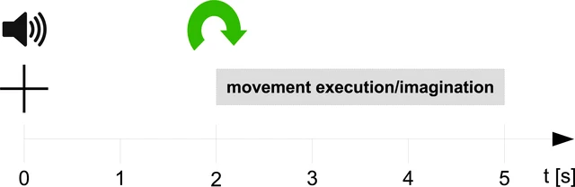

The cap
The authors recorded scalp voltage against a reference behind the right ear, on the
mastoid. AFz, shown in slate, was the ground. The 61 signal channels are separate from
these two connections. The researchers digitized each cap before the session. This reader
instead places the 61 published names at their matching FieldTrip 10–5 template
coordinates on its Colin27 scalp.
The right arm
Participants sat with the right arm supported against gravity. They began with the elbow
at 120°, the hand half open and the forearm in a neutral rotation. The exoskeleton and a
5DT data glove supplied the evidence of movement. The authors used the elbow and forearm
sensors to time arm movements and the finger readings to time hand opening and closing.
The trial
At five seconds the task ended. Participants returned to the starting pose. The next trial
followed a variable break of two to three seconds. A separate session asked them to
imagine the same movements.

Ofner et al., Figure 2 ·
CC BY 4.0